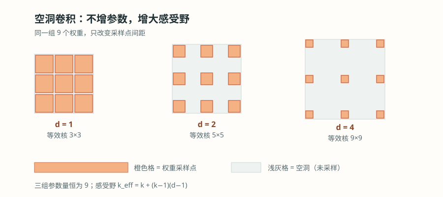
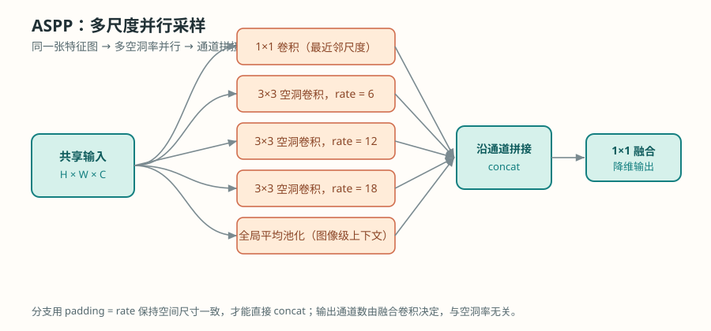
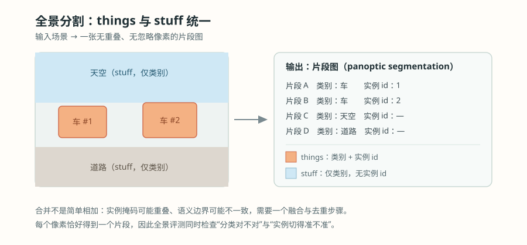

CHAPTER 22 · SEGMENTATION FRONTIER
语义分割前沿与全景分割：从空洞卷积到提示式分割
语义分割要把每个像素归到一个类别，但下采样会丢细节、物体尺度又差异巨大。本章沿两条主线收束：其一，用空洞卷积、ASPP 与金字塔池化在有限显存下同时拿到精细边界与全局上下文；其二，把可数的 things 与无定形的 stuff 合并成全景分割，并用 PQ 统一评测。最后看提示式基础模型 SAM 改变了什么、又没有改变什么。
空洞卷积：不降分辨率扩大感受野
FCN（Long 等，2015）证明了分类网络可以把最后的全连接层换成卷积，从而输出与输入同分辨率的逐像素预测。但它在编码路径里保留了多次步长下采样，输出特征图只有原图的约 1/32 分辨率，靠上采样恢复后边缘仍然粗糙。要同时保住细节与大感受野，直接的办法是少下采样、多堆卷积——但标准卷积每加一层只把感受野扩大一个核宽度，代价陡增。
空洞卷积（dilated / atrous convolution）换了一个做法：在卷积核元素之间插入 d−1 个空隙（等价于对核做零填充）再与特征图做互相关。参数量与标准 k×k 卷积完全相同，但等效核尺寸随空洞率线性增大。需要强调的是：这仍然是互相关（不翻转核），空洞只改变采样网格的疏密，不改变核的方向。

d 只放大等效核，不增加参数。橙色格是权重采样点，灰色格是未被采样的空洞。设核边长为 k、空洞率为 d（d=1 即普通卷积），等效核边长为：
当 k=3：d=1→3、d=2→5、d=4→9。感受野扩大，参数量不变，这正是 DeepLab 用它替代额外池化的原因。
空洞卷积的代价是网格效应（gridding）：相邻位置若使用相同空洞率，采样点会呈稀疏棋盘状，局部连续信息可能被跳过。连续堆叠越深、空洞率越大，缺口越明显。DeepLab v3 因此采用“混合空洞率”策略——让后续层的空洞率不再整除彼此，使采样网格覆盖更稠密。
ASPP：多尺度并行采样
单个空洞率只对应一个尺度。DeepLab v2 提出 ASPP（Atrous Spatial Pyramid Pooling，空洞空间金字塔池化）：把同一特征图并行送入多个不同空洞率的空洞卷积，再把各路结果拼接。1×1 分支负责最近邻尺度，较大的 rate 覆盖远距离上下文，v3 又补上一个全局平均池化分支提供图像级上下文。这样一次前向就同时拿到“局部—中距—远距—全局”的多尺度特征。
def effective_kernel(k, dilation):
"""k: 卷积核边长; dilation: 空洞率. 返回等效感受野边长."""
return k + (k - 1) * (dilation - 1)
assert effective_kernel(3, 1) == 3 # 普通 3x3
assert effective_kernel(3, 2) == 5 # d=2 -> 5x5
assert effective_kernel(3, 4) == 9 # d=4 -> 9x9, 参数量仍是 9
# 感受野随空洞率单调增大, 但参数量与 k 无关
assert effective_kernel(3, 2) > effective_kernel(3, 1)
# DeepLab v3 ASPP 默认的一组空洞率
rates = (6, 12, 18)
fields = [effective_kernel(3, r) for r in rates]
assert fields == [13, 25, 37] # 3+2*(6-1), 3+2*(12-1), 3+2*(18-1)
print("等效核边长 d=1,2,4:", effective_kernel(3, 1), effective_kernel(3, 2), effective_kernel(3, 4))
print("ASPP rate", rates, "->", fields)
拼接要求各分支输出空间尺寸相同，而不同空洞率要维持同样尺寸就必须按 rate 调整 padding（d=6 用 padding=6，d=18 用 padding=18）。这是工程实现里最常见的坑：padding 跟不上 rate 会导致尺寸不匹配。ASPP 的参数与计算量集中在融合用的 1×1 卷积和分支通道数上，与空洞率无关。
金字塔池化与编码-解码
ASPP 之外，另一条主线是“如何重新拿回精细空间细节”。它分成两个互补的思路。
金字塔池化（PSPNet，2017）：在编码器顶部把特征图分别划分成 1×1、2×2、3×3、6×6 的网格，对每个网格做全局平均池化，再上采样回原尺寸后拼接。不同尺度网格各自编码“全局—区域—局部”的上下文，语义分类因全局信息而受益。
编码-解码：SegNet（2015）把编码器中最大池化层记录的池化索引（pooling indices）传给解码器，用它们做无参上采样；DeepLab v3+（2018）则把 ASPP 当编码器、再接一个轻量解码器融合浅层高分辨率特征。U-Net 的跳跃连接（第 20 章）属于同一家族，区别在于它直接拼接完整特征图而非复用池化索引。
| 模型 | 年份 | 核心机制 | 边界恢复手段 |
|---|---|---|---|
| FCN | 2015 | 全连接层转卷积 | 可学习上采样，边界粗糙 |
| SegNet | 2015 | 解码器复用池化索引 | 无参反池化，省参数但灵活性低 |
| DeepLab v2/v3 | 2016–2017 | 空洞卷积 + ASPP | v3 去掉 CRF 后处理，靠 ASPP 与输出步长控制 |
| PSPNet | 2017 | 金字塔池化模块 PPM | 多尺度全局上下文，缺浅层细节 |
| DeepLab v3+ | 2018 | ASPP 编码器 + 轻量解码器 | 融合浅层高分辨率特征 |
三个容易混淆的点：CRF 后处理只在 DeepLab v1/v2 中作为独立后处理使用，v3 把它并入结构后抛弃；空洞卷积与“增大卷积核”不等价——前者在稀疏网格上采样，后者采样更密；ASPP 与 PPM 都在做多尺度，但 ASPP 用不同空洞率、PPM 用不同池化网格，实现依赖不同。
全景分割：统一 things 与 stuff
语义分割给每个像素一个类别，但不区分同类个体；实例分割（第 21 章）只处理可数的 things（人、车、杯子），不标注天空、路面这类无定形的 stuff。全景分割（Kirillov 等，CVPR 2019）的目标是：给每个像素一个类别标签，并给每个 things 像素一个实例 id；stuff 只有类别、没有实例 id。它的输出定义覆盖整张图，没有“忽略”像素，因此不允许重叠。

从任务定义看，全景 = 语义 + 实例，但不是两者输出的简单相加：实例模型可能给出重叠掩码，语义模型可能边界不一，全景需要一个融合与去重步骤，把两类预测拼接成一张无重叠的“片段图”（panoptic segmentation）。衡量它需要同时考察“分类对不对”与“实例切得准不准”，于是有了下一节的 PQ。
PQ：一个可分解的评测指标
全景分割需要同时考察分类与实例切分。Kirillov 等提出的全景质量 PQ（Panoptic Quality）把两者拆为两项乘积。评测时，预测片段与真实片段只有在类别相同且 IoU 严格大于 0.5 时才配为真正例 TP；已匹配对不再参与后续匹配（一对一）。
SQ 衡量“切得准不准”（已匹配片段的平均 IoU），RQ 衡量“找得全不全”（类似 F1）。乘式的好处是：单独切错实例会同时拉低两项，而单纯漏检主要惩罚 RQ。
注意两点：一是 0.5 出现在 RQ 的分母里，是因为一个不匹配的预测/真实片段只算半个错误，这让未匹配的惩罚低于错误匹配；二是 PQ 在 things（按 1 计）与 stuff 上的口径不同——论文为 stuff 也定义了无实例 id 的片段质量，但本页不展开数据集级别的聚合数字。
def iou(a, b):
return len(a & b) / len(a | b)
def panoptic_quality(preds, gts, thr=0.5):
"""preds/gts: [(id, class, set(pixels))]; IoU>0.5 且同类别才能配对."""
tp, sq_sum, used = 0, 0.0, set()
for _, pc, pset in preds:
best = max(((iou(pset, gset), gi) for gi, (_, gc, gset) in enumerate(gts)
if gc == pc and gi not in used and iou(pset, gset) > thr), default=None)
if best is not None:
sq_sum += best[0]; used.add(best[1]); tp += 1
fp, fn = len(preds) - tp, len(gts) - tp
sq = sq_sum / tp if tp else 0.0
rq = tp / (tp + 0.5 * fp + 0.5 * fn) if tp + fp + fn else 0.0
return sq * rq, sq, rq
preds = [("p1", "car", {1, 2, 3}), ("p2", "road", {4, 5})]
gts = [("g1", "car", {1, 2, 3}), ("g2", "road", {4, 5})]
assert panoptic_quality(preds, gts) == (1.0, 1.0, 1.0) # 完全匹配
pq_partial, _, _ = panoptic_quality(preds, gts[:1]) # 漏一个 stuff
assert abs(pq_partial - 2 / 3) < 1e-9
preds_bad = [("p1", "car", {1}), ("p2", "road", {4, 5})] # IoU=1/3 低于阈值
pq_bad, _, _ = panoptic_quality(preds_bad, gts)
assert abs(pq_bad - 0.5) < 1e-9
print("PQ 完全匹配/漏检/低IoU =", 1.0, round(pq_partial, 3), pq_bad)SAM：提示式分割基础模型
SAM（Segment Anything Model，Kirillov 等，ICCV 2023）把分割重构成一个可提示（promptable）任务：给定点、框或粗略掩码作为提示，模型返回该提示对应的物体掩码。它不是“自动给每个像素分类”，而是“根据提示找出目标”。架构分为三个组件：重型的图像编码器（ViT，把图编成嵌入）、轻量的提示编码器和掩码解码器。图像嵌入只算一次，之后每个提示只需跑很小的解码器，因此可以交互式快速出掩码。

训练数据 SA-1B 的规模由论文报告：约 1100 万张图像与约 11 亿个掩码（型号数字属论文口径，本页不重算）。模型是类别无关的：它知道“这里有一个物体”，但不知道它叫什么名字——这与语义分割的“给像素一个类别”是不同任务。
把 SAM 直接当成语义分割会用错：它不输出类别标签、依赖提示；若想无提示地得到所有物体，需要额外跑一个点网格并去重，即自动掩码生成（automatic mask generation），而它仍不告诉你类别。正确的用法是把 SAM 当作分割能力的基础设施，上游用一个分类器/检测器给出类别与提示。
适用条件与边界
把本章的方法放进工程决策时，有几个必须写清的边界：
- 空洞卷积依赖输出步长：为保住分辨率而缩小下采样，会显著增加显存与计算；带大 rate 的空洞卷积在深层容易失去有效采样点（网格效应），必须配混合空洞率。
- ASPP / PPM 不是万能的：它们提供多尺度上下文，但不产生实例区分；边界精度仍取决于是否有浅层高分辨率特征（DeepLab v3+ 与 U-Net 都靠这一点）。
- PQ 阈值是定义的一部分：IoU 阈值、是否允许空片段、stuff 的计分口径都会改变数字，跨论文比较前必须对齐协议。
- SAM 是提示式、类别无关的：它改的是“用什么交互方式分割”，没有解决“给像素一个类别名”的问题；把它与语义/实例模型对比时，任务与指标并不相同。
检查理解：为什么 ASPP 里不同空洞率的分支能直接拼接，而 U-Net 要靠跳跃连接？
ASPP 的各分支共享同一张输入特征图、都用 padding=rate 保持空间尺寸，所以输出分辨率相同、可直接沿通道拼接，它们提供的是同一尺度的不同上下文。U-Net 的跳跃连接跨越的是不同深度的编码层，两侧分辨率并不相同，因此需要先对齐尺寸再拼，目的是把丢掉的浅层细节搬回解码器。前者的多尺度来自并行空洞率，后者的细节来自跨层传递。
原始资料与口径
本页的 FCN、空洞卷积/ASPP、SegNet、PSPNet、DeepLab v3+、全景分割与 PQ、SAM 均以对应原论文为准；SA-1B 规模与各类 mIoU/PQ 数值依赖数据集、主干与训练日程，本页未固定具体指标。
- Fully Convolutional Networks for Semantic Segmentation (Long 等, CVPR 2015, arXiv:1411.4038)
- DeepLab: Semantic Image Segmentation with Deep Convolutional Nets, Atrous Convolution, and Fully Connected CRFs (Chen 等, arXiv:1606.00915)
- Rethinking Atrous Convolution for Semantic Image Segmentation (DeepLab v3, arXiv:1706.05587)
- SegNet: A Deep Convolutional Encoder-Decoder Architecture (arXiv:1611.09326) · Pyramid Scene Parsing Network (PSPNet, arXiv:1612.01105)
- Encoder-Decoder with Atrous Separable Convolution (DeepLab v3+, arXiv:1802.02611)
- Panoptic Segmentation (Kirillov 等, CVPR 2019, arXiv:1801.00868)
- Segment Anything (Kirillov 等, ICCV 2023, arXiv:2304.02643)